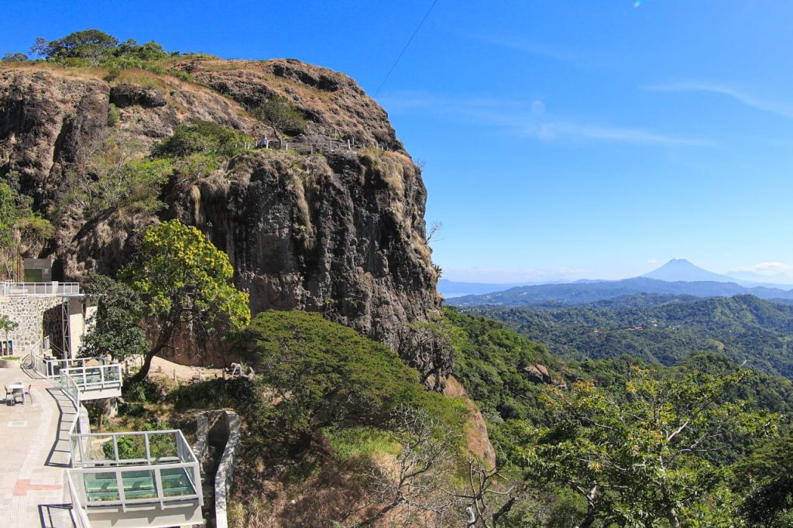

Lugares Turísticos

Lago de coatepeque
Lago de Coatepeque es uno de los destinos turísticos más espectaculares de El Salvador, ideal para los amantes de la naturaleza y la aventura gracias a su impresionante paisaje dividido en dos experiencias únicas. Por un lado, la Ruta de los Miradores en la carretera alta te regala postales perfectas de la caldera volcánica mientras disfrutas de café local, frutas frescas y terrazas de restaurantes suspendidos sobre el paisaje. Por el otro, al bajar a la Zona de la Ribera, el ambiente se vuelve totalmente tropical y dinámico, permitiéndote nadar en sus aguas, relajarte en muelles privados con un pase de día en hoteles premium, o subir la adrenalina alquilando motos acuáticas, kayaks y lanchas para explorar la mística Isla Teopán y los islotes de Los Anteojos.
El Lago de Coatepeque es una colosal caldera volcánica de 25.3 kilómetros cuadrados y 115 metros de profundidad, formada hace más de 57,000 años en El Congo, Santa Ana. Su nombre en náhuat significa "Cerro de Culebras" y es famoso por sus místicas aguas que cambian impredeciblemente a un color turquesa brillante debido a microalgas y minerales subterráneos.

Laguna de Alegría
Es un fascinante cuerpo de agua de origen volcánico ubicado en el interior del cráter del volcán Tecapa, en el municipio de Alegría, Usulután, El Salvador. Este destino de montaña destaca por su clima fresco, la neblina que suele cubrir sus alrededores y las llamativas aguas de tonos verde esmeralda con un alto contenido de azufre, a las que muchos visitantes atribuyen propiedades medicinales. Como parte de la experiencia ecoturística, es posible realizar caminatas alrededor del cráter, explorar los senderos rodeados de cafetales y complementar el viaje paseando por las coloridas calles del pueblo de Alegría, famoso por sus viveros y aire puro.
Ubicada a 1,200 metros sobre el nivel del mar en el cráter del volcán Tecapa, es un tesoro salvadoreño bautizado por la poeta Gabriela Mistral como la "Esmeralda de América". Famosa por sus místicas aguas verde esmeralda ricas en azufre y rodeadas de neblina, carece de vida acuática debido a su acidez, lo que impulsa a los turistas a usar su barro volcánico con fines medicinales

Puerto el triunfo
Desde el Muelle de Puerto El Triunfo, los visitantes pueden abordar lanchas para adentrarse en los laberintos de manglares, avistar diversas especies de aves y tortugas marinas, o realizar mágicos recorridos nocturnos para apreciar el fenómeno de la bioluminiscencia en el agua. La zona del malecón ofrece además una vibrante experiencia culinaria con restaurantes flotantes y platillos típicos a base de mariscos, destacando especialmente las tradicionales pupusas de camarón y curil, lo que lo convierte en un destino ideal para combinar la naturaleza, la cultura y la gastronomía del oriente salvadoreño.
Desde el histórico Muelle de Puerto El Triunfo, fundado en 1875, los turistas abordan lanchas para explorar la Bahía de Jiquilisco, el mayor sistema de manglares del país y Reserva de la Biosfera de la UNESCO. Este santuario ecológico es el hogar del 40% de las tortugas carey de todo el Pacífico Oriental y un paraíso para avistar más de 200 especies de aves y barcos industriales abandonados. Con recorridos nocturnos de bioluminiscencia y una vibrante oferta culinaria en su malecón —famosa por sus restaurantes flotantes y las exclusivas pupusas de camarón y curil—, este destino entrelaza de forma perfecta la riqueza natural internacional con los sabores del oriente salvadoreño.

La costa del sol
La Costa del Sol es una de las franjas turísticas más extensas y exclusivas de El Salvador, destacando por sus 15 kilómetros de playas de arena suave y un impresionante entorno natural en el departamento de La Paz. El destino ofrece una experiencia doblemente atractiva: por un lado, se puede disfrutar de un mar cálido ideal para caminar al atardecer y relajarse frente a las olas; por el otro, se encuentra el Estero de Jaltepeque, un majestuoso santuario de manglares donde se realizan paseos en lancha para el avistamiento de aves y exploración de canales acuáticos. Además de contar con el accesible Parque Recreativo Costa del Sol administrado por el ISTU, la zona alberga una variada oferta de hoteles y resorts internacionales con la modalidad de Day Pass, así como una vibrante propuesta gastronómica especializada en mariscos frescos, convirtiéndola en el escape playero por excelencia a poco más de una hora de la capital salvadoreña.
Es una exclusiva franja de 15 kilómetros de playas cálidas y sin piedras en La Paz, ideal para nadar y relajarse a solo una hora de la capital. Este paraíso ofrece una doble experiencia: el mar abierto y el Estero de Jaltepeque, un santuario de manglares que conecta con la Isla Tasajera y la desembocadura del Río Lempa.

Puerto de la libertad
El Puerto de La Libertad es el complejo turístico costero más icónico y visitado de El Salvador, ubicado en el departamento de La Libertad, a tan solo 30 minutos de la capital. Este destino combina a la perfección la tradición pesquera, el surf de clase mundial y la modernidad a través de atracciones principales como Sunset Park, un parque de diversiones frente al mar, y el Mercado del Mar, donde se puede comprar marisco fresco o disfrutar de la gastronomía local en sus restaurantes del segundo nivel. Además, el histórico muelle artesanal ofrece un espectáculo único al ver el vaivén de las lanchas pesqueras, mientras que su proximidad con la zona de Surf City (como la playa El Tunco) lo convierte en el punto de partida ideal para los amantes de las olas y la vida nocturna. Puedes consultar más detalles sobre horarios y atracciones en la Guía Oficial de Surf City El Salvador.
Este destino tropical de arena negra ofrece acceso gratuito, parqueo a $1.00 y atracciones como Sunset Park con juegos mecánicos desde $1.00 y el Mercado del Mar con platillos desde $7.00. Para vivir la experiencia al máximo, visita su histórico muelle artesanal temprano por la mañana para comprar marisco ultra fresco directo a los pescadores, admira a los surfistas profesionales domando la mítica ola de Punta Roca, o conecta en 20 minutos con el senderismo del Parque Nacional Walter Thilo Deininger.

Cerro verde
El Parque Natural Cerro Verde, un volcán extinto a 2,030 metros de altura en Santa Ana, es un paraíso de bosque nebuloso famoso por su clima fresco y senderos accesibles como "Las Flores Misteriosas". Para los turistas, este destino destaca por sus espectaculares miradores hacia el Lago de Coatepeque, su hermoso orquideario y el histórico [Hotel de Montaña Casa 1800 Cerro Verde]. Además, es el punto de partida oficial y obligatorio para realizar las caminatas guiadas hacia las cumbres de los imponentes volcanes de Izalco y Santa Ana.
Abierto de 8:00 a.m. a 8:00 p.m., protege 54 manzanas de bosque nebuloso que albergan más de 127 especies de aves y árboles centenarios. La entrada cuesta $1.50 para nacionales y $3.00 para extranjeros, con opciones de hospedaje en cabañas del ISTU desde $35.00 o en el histórico.

Parque Natural Puerta del Diablo
La Puerta del Diablo es una icónica formación rocosa y parque natural ubicado en el distrito de Panchimalco, a unos 13 kilómetros de San Salvador, la capital de El Salvador. El sitio destaca por una imponente grieta formada por grandes peñascos situados en el cerro El Chulo, los cuales ofrecen una de las vistas panorámicas más espectaculares del país. Desde sus miradores se puede contemplar la capital, el volcán de San Vicente, el lago de Ilopango y la costa del océano Pacífico.
A esta imponente geografía de 1,131 metros sobre el nivel del mar se suma una moderna infraestructura abierta de 8:00 a.m. a 10:00 p.m. con entrada gratuita, plazas gastronómicas, elevadores inclusivos y miradores con piso de vidrio suspendidos en el vacío. Su mística proviene de una leyenda colonial sobre el diablo que partió la montaña en tres peñascos: El Chulo, El Chulito y El Chulón. Para los turistas más intrépidos, el ascenso controlado a las cumbres cuesta $1.50 para nacionales y $3.00 para extranjeros (disponible hasta las 5:00 p.m.), ofreciendo además opciones de rappel y canopy que complementan perfectamente una noche de pupusas en los cercanos Planes de Renderos.

El boqueron
El Parque Nacional El Boquerón es un espectacular destino natural ubicado en la cima del volcán de San Salvador, a solo 30 minutos de la capital. Situado a 1,800 metros sobre el nivel del mar, este parque cautiva a los turistas con su clima fresco y su colosal cráter de 1.5 kilómetros de diámetro, en cuyo fondo descansa el "Boqueroncito", un pequeño cono formado en la erupción de 1917. Es el sitio ideal para caminar entre senderos de hortensias, disfrutar de imponentes miradores con piso de vidrio y deleitarse con la vibrante ruta gastronómica y de cafés de altura que adorna su carretera de acceso.
El Boquerón, cuyo nombre ancestral es Quezaltepeque, esconde fascinantes secretos naturales en la cima del Volcán de San Salvador. Este fresco ecosistema, hogar del Torogoz (el ave nacional), albergaba una hermosa laguna en su fondo hasta que la erupción del 7 de junio de 1917 la evaporó por completo. En su lugar nació "El Boqueroncito", un singular mini-volcán de 37 metros de altura que hoy decora el abismo. El impacto de este coloso aún es visible en El Playón, una espectacular extensión de lava negra petrificada en las faldas de la montaña, custodiada por "El Picacho", la cumbre más alta del complejo volcánico a 1,960 metros de altura.

Cerro El Pital
El Cerro El Pital es el punto más alto y frío de El Salvador, una majestuosa montaña boscosa a 2,730 metros sobre el nivel del mar en la frontera con Honduras. Rompiendo con el clima tropical del país, ofrece temperaturas que bajan hasta los 0°C, un místico bosque de pinos ideal para acampar, senderos de flores exóticas y vistas panorámicas espectaculares desde sus miradores naturales.
Además de albergar el hito fronterizo donde puedes cambiar de país en un segundo, es famoso por la "Piedra de la Paridora" (una grieta rocosa partida por un rayo según la leyenda) y por ser el único lugar del país donde caen granizadas tan densas que simulan nieve.